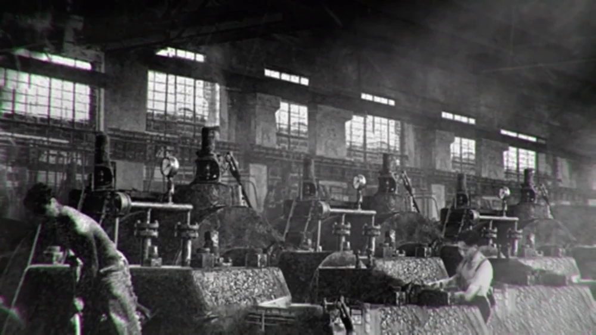
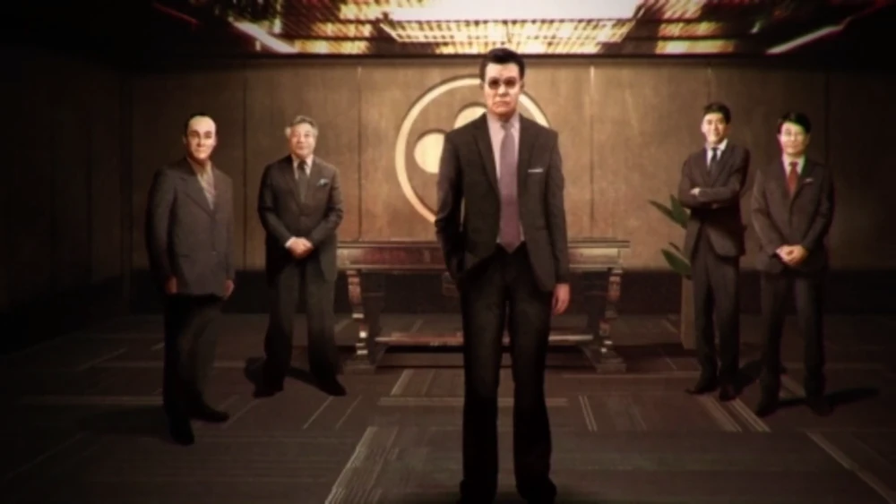
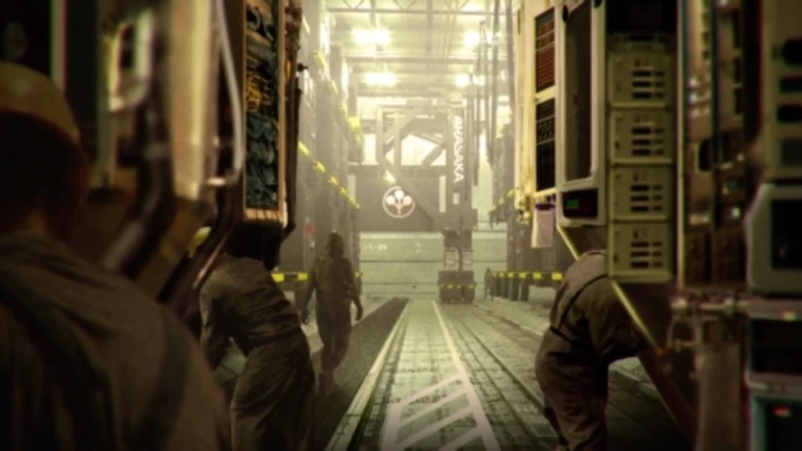
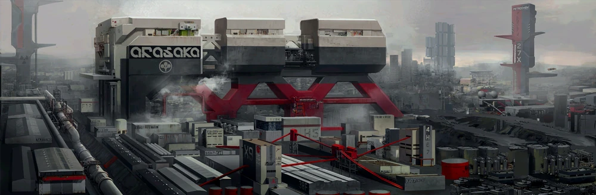

História: Anos 1910 - 1950
Fábrica da Arasaka, Japão, 1920
A Corporação Arasaka foi fundada em 1915 por Sasai Arasaka em Chuo-ku, Tóquio, Japão. A empresa era originalmente focada em manufatura e tirou total proveito da Segunda Guerra Mundial para aumentar sua riqueza e poder, fornecendo suprimentos ao Exército Imperial. No entanto, Sasai previu a derrota do Japão e trabalhou para garantir que sua empresa e fortuna sobrevivessem à guerra, espalhando sua riqueza pelo mundo, fora do alcance da liderança do pós-guerra. Logo em seguida, os japoneses se renderam e o país ficou em ruínas, com a maioria das cidades destruídas pelos constantes bombardeios (com exceção de Kyoto).[4]
Em 15 de agosto de 1945, o Imperador transmitiu o decreto de rendição e renunciou à sua divindade. Saburo Arasaka, um ex-tenente da Marinha Imperial Japonesa e filho de Sasai, ficou atônito. Ele estava prestes a cometer seppuku (suicídio ritual) no bosque de cerejeiras do complexo hospitalar quando teve um momento de epifania e uma visão. Exatamente naquele momento, Saburo compreendeu a sabedoria das ações de seu pai. Como herdeiro da família, aquela fortuna logo seria sua para controlar — uma fortuna que, se manejada corretamente, permitiria a um homem inteligente impulsionar o Japão de volta a uma posição de poder, de onde poderia dominar o mundo política e economicamente. Os filhos de Amaterasu prevaleceriam; se não sob o Imperador, então sob outra divindade: o comércio. Saburo puxou a meia polegada da adaga que já havia penetrado seus músculos abdominais, antes que a visão detivesse sua mão, e retornou para casa. Naquela mesma noite, ele começou a estudar política, economia e história, estudos que continuaram até a morte de seu pai.
Embora a economia e a indústria do Japão estivessem em ruínas, Saburo estudou todos os assuntos relacionados a negócios, economia e política enquanto frequentava a Universidade de Tóquio (Todai). Isso foi feito para garantir que ele tivesse as habilidades necessárias para alcançar seus objetivos. Sasai havia lucrado com a indústria durante o tempo de guerra, mas, contrariando os apelos fervorosos de Saburo na época, ele garantiu que a maior parte da fortuna da Arasaka ficasse secretamente protegida em ativos e contas ocultas no exterior.[6]

História: 1960 - 1997
Saburo Arasaka e membros do conselho, no escritório da Arasaka em Tóquio, Japão, 1960
Em 1960, Sasai Arasaka faleceu e Saburo, aos 41 anos, assumiu o lugar de seu falecido pai como chefe da Corporação Arasaka. Naquela época, a Arasaka ainda era uma empresa relativamente pequena, tendo acabado de se restabelecer no comércio internacional. Antes de sua morte, o pai de Saburo vinha recuperando lentamente o capital e os recursos mantidos em segredo durante a guerra e, após sua morte, o próprio Saburo continuou a tarefa.
A Criação da Segurança Arasaka e Ascensão Global:
Em 1970, Saburo criou a divisão de Segurança Arasaka da Corporação Arasaka. A nova divisão se especializou em mão de obra pessoal e corporativa de alta qualidade, além de proteção e segurança eletrônica e computacional.[6]
Lentamente, ao longo de 25 anos, a Segurança Arasaka desenvolveu uma reputação impecável como a empresa mais potente do seu tipo no mundo.
Em 1990, a Arasaka apareceu na lista Global 500. Em meados da década de 1990, guardas da empresa eram empregados por milhares de indivíduos e corporações poderosas ao redor do mundo, e os especialistas em segurança de computadores e contramedidas de intrusão da Arasaka eram contratados por muitos outros.
Não demorou muito para que a divisão de Segurança se tornasse uma das três holdings mais poderosas da Arasaka, igualada apenas pelo Banco Arasaka e pela Manufatura Arasaka.
O Colapso do Mercado e a Expansão:
A dedicação de Saburo aos seus estudos permitiu-lhe prever o colapso do mercado mundial de 1994 e o colapso dos EUA em 1996. Saburo foi capaz de tomar as medidas adequadas e, através de sua manipulação astuta e investimentos, fazer da Corporação Arasaka uma das poucas instituições comerciais a lucrar com a crise. A Arasaka já era grande antes da crise, mas no período subsequente assumiu uma estatura gigantesca, tornando-se uma das maiores Megacorporações do mundo, ocupando agora o segundo lugar na lista Global 500.
Em algum momento da década de 1990, o Grupo Europeu da Arasaka construiu sua sede europeia em Paris, França.[4]
Em 1997, a Segurança Arasaka entrou na área de contratos paramilitares e começou a treinar um dos primeiros exércitos corporativos do mundo em sua instalação de treinamento de guardas e agentes, localizada nos ermos proibidos do norte de Hokkaido.
Uma era de implacabilidade se seguiu, com a Arasaka destruindo ou absorvendo o máximo possível de sua concorrência e comprando quaisquer empresas não competitivas que Saburo achasse que seriam um bom ativo.
Conflitos Políticos no Japão:
O controle da Arasaka sobre o governo do Japão estava se tornando problemático no final da década de 1990. Saburo estava perto de ter controle total, com 60% da Dieta Nacional do Japão (o parlamento japonês) sendo composta por políticos comprados pela Arasaka.
No entanto, devido ao crescente medo entre outras corporações japonesas sobre a tentativa de tomada do governo pela Arasaka, um grupo foi formado por grandes e pequenas empresas que se uniram sob a bandeira da FACS (Esfera de Coprosperidade do Extremo Asiático). Isso contrabalançou o controle de Saburo sobre o governo e muitos políticos foram presos. A FACS continuaria a minar os planos da Arasaka nas décadas seguintes.[4]

História: 1997 - 2020
Fábrica da Arasaka, 2000
Os anos de 1997 a 2020, no entanto, viram a Corporação Arasaka continuar a se diversificar e se fortalecer. Seus principais braços operacionais ainda eram os grupos do Banco Arasaka, Manufatura e Segurança. Embora a corporação fosse incrivelmente rica e poderosa, e Saburo um dos homens mais ricos do mundo, ele não havia esquecido seu objetivo original. Durante esse período, Saburo deixou o cargo de CEO e, em seu lugar, seu filho Kei Arasaka se tornou o chefe nominal da Corporação Arasaka. No entanto, todas as decisões e políticas importantes ainda estavam sujeitas ao critério de Saburo. Saburo havia preparado seu filho para o eventual controle total e para a realização de seus objetivos pessoais.[6]
Expansão Global e Conflitos Regionais:
Durante o início dos anos 2000, a Arasaka firmou grandes contratos de serviços de guarda-costas para a Eslováquia. Embora não tivesse tanto poder político quanto outras corporações japonesas ou coreanas dentro da nação, a empresa ainda mantinha subsidiárias produzindo artigos para o mercado europeu.[8]
Em 2008, o governo de Taiwan contratou a Arasaka para planejar sua força de defesa, temendo uma invasão chinesa. Taiwan administrava defesas antinavio, antiaéreas e antimísseis nas ilhas de Kinmen e Matsu, e em Hsinchu, Chanhua, bem como em Anping. Todas essas ilhas contavam com tropas contratadas da Arasaka para o monitoramento constante da Militech (que era patrocinada pelos comunistas e chineses).[9]
Em 2010, a Arasaka, junto com a WNS, EBM, WorldSat e as forças da Tríade, repeliu a invasão do MLC em Hong Kong. Após três anos, eles tiveram sucesso na defesa da cidade, e todas as quatro corporações assumiram o controle de setores de Hong Kong.[4] A Arasaka garantiu as regiões de Chai Wan e Shau Kei Wan, com habitações corporativas nos níveis intermediários do pico e escritórios na Baía. Eles também construíram seu novo escritório regional no novo território.[9]
Em 2020, a Arasaka garantiu um assento político no governo de Portugal. A aliança cooperativa que estava no poder havia se dividido em duas facções. O partido cooperativo (Partido do Progresso Consensual) tinha dois candidatos à presidência, cada um apoiado por três das corporações no controle (Agroindustrial Ibérica, Segurança Amazônica e WNS contra Merchant, Arasaka e Oliveira-Lazer). As tensões entre a Segurança Amazônica e a Arasaka aumentaram durante as tentativas de restaurar a harmonia e um crescimento econômico estável no país.[8]
Tecnologia e o Ataque em Night City:
Em 2013, a Arasaka America enfrentou grandes ataques terroristas em sua sede em Night City. Um rockerboy chamado Johnny Silverhand liderou um motim na base da Torre e conseguiu assassinar vários funcionários da Arasaka, bem como o CEO da filial americana, Toshiro.
Durante esse período, a Arasaka fez uma parceria com a Sony Corporation na coprodução da arma Medusa 2000. A arma dava ao usuário interface direta a uma poderosa lente de zoom multimídia com intensificadores de imagem, habilidades telescópicas e macro, sensores antiofuscamento, UV e termográficos. Quaisquer dados filmados eram armazenados em chips de dados ou diretamente em um banco de armazenamento de processador neural.
Em algum momento durante 2020, um submarino de carga da Arasaka e sua tripulação, incluindo o Capitão Hyung Mitsumoto, afundaram no Pacífico Norte. Isso levou à aquisição da IDA (International Defense Alliance - Aliança de Defesa Internacional), uma organização independente que foi então colocada sob o comando da subsidiária da Arasaka, a Sato Commercial Shipping. Uma equipe secreta da IDA foi enviada à Fossa de Bonin para trazer o submarino à superfície.
A Quarta Guerra Corporativa (2022-2025)
Em 2021, uma corporação oceânica conhecida como Internationale Handelsmarine Aktiengesellschaft (IHAG) declarou falência. Tanto a CINO quanto a OTEC procuravam adquirir as ações da corporação, mas ambas as empresas tinham um poder de compra muito equivalente para que qualquer uma obtivesse vantagem imediata. Então, eles decidiram esgotar os recursos do oponente e sabotar suas tentativas de aquisição de ações.[5] Como isso se provou ineficaz por si só, a aquacorporação CINO contratou a Arasaka, enquanto a OTEC contratou a Militech. Sendo as duas maiores corporações paramilitares do mundo, a Arasaka e a Militech já rivalizavam há muitos anos sob diferentes contratantes. A Arasaka viu nisso uma oportunidade para exaurir os recursos da Militech.
Durante esse período, Saburo Arasaka logo passou a considerar Donald Lundee uma ameaça real — alguém que ameaçava seus objetivos para a Corporação Arasaka. Em 2022, Kei Arasaka foi responsável por grande parte das operações diárias e decisões importantes durante a confusão da IHAG.
Embora Kei visse a luta como qualquer outra operação de negócios e nunca a levasse para o lado pessoal, em alinhamento com a tradição da Arasaka, ele pretendia não medir esforços para garantir que seu lado saísse vitorioso e nunca recuaria diante de uma ofensa direta à empresa. Kei também tinha controle total sobre a corporação de seu pai porque, durante esse tempo, Saburo estava em reclusão por motivos de segurança, devido ao conflito. No entanto, Kei sabia que a guerra não acabaria bem e começou a trabalhar diretamente com o General Ubo Tanaka, preparando-se para sacrificar ativos importantes a fim de vencer. A única coisa que lhe restava eram seus planos de contingência, que ele esperava que salvassem o zaibatsu caso o pior acontecesse e a Arasaka perdesse.
O Fim da Guerra e a Queda:
O fim da guerra para a empresa resultou na morte de Kei Arasaka e na destruição das Torres Arasaka em Night City no ano de 2023, sendo obliteradas por uma mini-bomba nuclear plantada por uma equipe tática da Militech. A presidente Kress (dos NUSA) culpou a Arasaka pelo atentado em Night City, apesar de a culpa ser da Militech, e demonizou ainda mais a Arasaka para favorecer seus próprios interesses políticos.
As licenças da Arasaka para operar nos Estados Unidos foram revogadas imediatamente, seus membros e diretores foram declarados terroristas e seus ativos foram confiscados ou transferidos para paraísos fiscais (off-shore). A participação da Arasaka na Quarta Guerra Corporativa quase levou ao colapso do governo japonês. Ao repudiar a Arasaka após o fim oficial da guerra em 2025, a imagem nacional do Japão foi salva e a Arasaka foi reduzida a uma corporação restrita apenas ao Japão pela década seguinte.[2]

História: 2040 - 2076
Orla da Arasaka (Arasaka Waterfront), 2076
Mesmo após a derrota na Quarta Guerra Corporativa, a Arasaka manteve uma das maiores forças armadas em comparação com qualquer outra corporação. A empresa teve a maior parte de suas operações limitadas ao Japão e fortemente reduzidas. Apesar da situação, a Arasaka ainda conseguiu manter a maioria de seus ativos.[2]
Em 2040, a Corporação Arasaka se reconstruiu e estava, lentamente, recuperando grande parte de sua força anterior. A corporação também estava tentando consertar suas relações com os NUSA (Novos Estados Unidos da América) e ser bem-vinda de volta para continuar suas operações. A Arasaka ainda mantinha pequenas operações em partes selecionadas dos NUSA, mas nada oficial. A corporação continuava a licenciar secretamente suas tropas para outras empresas ao redor do mundo, porém eles teriam que usar os uniformes de seus novos "empregadores". O objetivo da Corporação Arasaka também não havia mudado: eles queriam retornar ao auge político e econômico que detinham na década de 2020.[2]
As Facções da Arasaka (2045)
A Arasaka podia estar sob o controle nominal de Saburo Arasaka, mas por muitos anos existiram facções disputando o domínio interno. A partir de 2045, havia três facções principais lutando para chegar ao topo, com cada uma esperando que o patriarca da família, Saburo, eventualmente passasse as rédeas para elas. As facções eram as seguintes:
Facção Kiji 雉 (Faisão Verde): Liderada por Hanako, esta facção era essencialmente uma continuação da linha principal. Mas, como Hanako era um tanto reclusa, ela estava mais interessada em seus experimentos de Netrunning do que em acumular poder. Este grupo consiste principalmente de tecnocratas conservadores que desejam seguir o curso estabelecido pelo próprio Saburo Arasaka. Em sua filha, Hanako, eles veem uma força guia para manter a velha ordem e a estabilidade dentro da corporação.
Facção Taka 鷹 (Falcão): Liderada por Yorinobu, o segundo filho de Saburo. Esta facção costuma preferir adotar as soluções mais diretas e intransigentes. Obstinado e temperamental, Yorinobu se assemelha a Saburo, o que lhe rendeu amplo apoio entre a elite da Arasaka com mentalidade mais militante. No entanto, suas inclinações mais pró-ocidentais e ideias — que são tão inovadoras quanto controversas — enfraqueceram seu apoio entre os tradicionalistas leais do conselho.
Facção Hato 鳩 (Pomba): Centrada em Michiko Arasaka, a única filha de Kei e neta de Saburo. Esta era a ala liberal da corporação, unificando aqueles que buscavam reformas mais profundas. Embora das três a Hato fosse a que detinha menos influência, eles ainda desfrutavam de um apoio crescente de popularidade entre alguns políticos e personalidades da mídia.
Várias facções menores também existiam dentro da corporação, mas não detinham tanto poder quanto as três principais. A influência mundial da Arasaka ainda estava presente, permanecendo no topo após a era da reconstrução.
Linha do Tempo de Eventos e Expansão
2067: O Imperador do Japão foi salvo de uma tentativa de assassinato por um guarda-costas da Arasaka, que interceptou a bala do atirador.
2068: A Arasaka colaborou com a Yaiba Corporation e projetou a motocicleta mais rápida e cara do mercado, a Kusanagi CT-3X. A Kusanagi se tornou a favorita entre membros de gangues, bosozokus e celebridades em todo o mundo.[3]
2069 a 2070 (Guerra de Unificação): Durante a guerra entre os NUSA e os Estados Livres, a Arasaka apoiou Night City, recuperando seu favor e eventualmente retornando à cidade em 2070, a pedido do então vereador Lucius Rhyne.[5] A Arasaka chegou à Baía de Coronado com seu super porta-aviões quando as tropas dos NUSA estavam prontas para invadir a cidade; as tropas dos NUSA receberam ordem de recuar por medo de que o país, já instável, entrasse em colapso devido a outro conflito. A Corporação Arasaka foi mais uma vez bem-vinda nas Américas enquanto reconstruía sua sede americana em Night City.[10]
A Retomada de Night City: Tendo recuperado grande parte de sua força anterior, a Arasaka reivindicou totalmente sua posição em Night City.[11] Eles começaram estabelecendo a Orla da Arasaka (Arasaka Waterfront), eliminando a concorrência na área. A Arasaka arrasou as estruturas desmoronadas da antiga Watson, transformando a região em um vasto complexo murado defendido por guardas e torres automatizadas. O local tornou-se repleto de armazéns de contêineres, hangares e linhas de montagem autônomas. O objetivo era garantir um porto e uma cadeia de suprimentos bem-sucedidos para a cidade e para os Estados Livres.
Início da década de 2070: Um bioengenheiro chamado Anders Hellman foi nomeado diretor do Projeto Relic. Usando o código-fonte do Soulkiller (Matador de Almas), Hellman criou uma nova tecnologia que era capaz de se comunicar com constructos de personalidade. Devido ao seu trabalho contínuo, lealdade e relacionamento pessoal com a família Arasaka, Saburo chegou a considerar oferecer a ele o cargo de Diretor do Instituto de Tecnologia de Kyoto.
2071: As forças de segurança da Arasaka evitaram distúrbios em massa em São Francisco, conseguindo reprimir o conflito.
2074: No Brasil, uma investigação da Arasaka destruiu uma célula terrorista que atuava no Rio de Janeiro. Os soldados da Arasaka executaram todos os terroristas responsáveis e encerraram uma série de ataques que o país vinha enfrentando.
2076: O departamento de contrainteligência da Arasaka conseguiu garantir a segurança de uma cúpula corporativa em Jacarta, na Indonésia, impedindo 45 conspirações de ataque e sabotagem contra o evento.[3]
2076 (Incidente Espacial): Uma equipe de agentes da Militech descobriu que a Arasaka estava escondendo o fato de possuir um acelerador de massa na Lua. A ESA (Agência Espacial Europeia) era a única organização com permissão para operar e possuir aceleradores de massa, uma vantagem que queriam manter. Por causa disso, a Militech avisou o conselho da ESA para prejudicar a rival. A ESA convocou uma reunião imediata para reexaminar a licença da Arasaka em assuntos espaciais. Os responsáveis pelo erro foram a Arasaka America, do braço de operações de Night City, e muitos funcionários temiam a resposta do Japão. Em uma tentativa de cobrir seus rastros, Arthur Jenkins ordenou a execução de membros do conselho — um movimento que, entre outras decisões, acabou custando a sua própria vida.[3]

2077....
Inovações, Tensões e o Relic
Testes Militares e Avanços: No Japão, os engenheiros da Arasaka conduziram com sucesso testes de mísseis balísticos em Yakushima. O novo míssil eletromagnético destinava-se a combater a crescente ameaça terrorista, bem como outros elementos rebeldes que ameaçavam a segurança pública. Também circulavam rumores de que a Arasaka estaria desenvolvendo uma nova linha de intensificadores de reflexos que durariam o dobro do tempo dos modelos atuais no mercado. A corporação estava em busca de participantes voluntários para esses experimentos.
Crescimento Corporativo: Durante um relatório aos acionistas, o conselho de administração anunciou que a Lasombra, sede da Arasaka no México, aumentou o poder de voto dos acionistas em 1,5%.
A Melhor Empresa para se Trabalhar: Em Night City, a Arasaka foi eleita a Megacorporação número #1 para se trabalhar. A gigante zaibatsu japonesa forneceria aos funcionários a mais recente tecnologia em cyberware com uma obrigação de lealdade de "apenas" 20 anos.[12]
O Lançamento do Relic: Em Tóquio, a Arasaka introduziu uma nova e revolucionária linha de biochips premium chamada Relic, anunciada como um meio para os compradores preservarem uma cópia de suas personalidades para as gerações futuras interagirem. A notícia foi dada primeiro pelo Nippon Daily, pouco antes de a Arasaka confirmá-la oficialmente. Dizia-se que a nova tecnologia revolucionária seria muito cara e um serviço exclusivo para o 1% que pudesse pagar por ela, o que significava que o produto não seria disponibilizado ao público em geral num futuro próximo.
Educação e Controle: A Arasaka anunciou que havia assinado um acordo de cooperação com a Universidade de Night City, oferecendo aos seus professores e alunos implantes cognitivos Arasaka Ozukumi Sx sob empréstimo com um desconto de 20%.
A Morte do Imperador e o Caos Interno
Saburo continuou atuando como CEO da Arasaka até sua morte, quando foi assassinado por seu filho, Yorinobu. A morte do CEO foi encoberta e atribuída a um envenenamento, enquanto Yorinobu consolidava o apoio da corporação e se tornava o novo CEO. Alguns dentro da corporação viam a ascensão repentina de Yorinobu com suspeita e cogitavam apoiar Hanako.[3]
Yorinobu tomou decisões controversas dentro da empresa, como a venda de ativos de instalações em Fukuoka e Kitakyushu. As ações da Corporação Arasaka saltaram 3% após essa decisão. A empresa patrocinou a Parada Dashi, um festival clássico japonês em Japantown, Night City. O desfile também se tornaria um festival em memória de Saburo Arasaka, um evento ao qual Hanako compareceria antes da notícia do falecimento de seu pai. Durante esse período, as tensões aumentavam entre a Arasaka e a Militech; a sabotagem corporativa poderia ser o estopim de outra Guerra Corporativa entre as duas empresas.
Após "resgatar" com sucesso sua irmã Hanako, Yorinobu convocou uma reunião de emergência do conselho supervisor da Arasaka em Night City. Altos executivos de Tóquio, bem como diretores de filiais de Paris, Xangai e Kinshasa, se reuniriam na Torre Arasaka, sede da Divisão Americana. Na verdade, Yorinobu tinha um plano para um golpe militar que daria a ele, e aos leais à sua facção, controle total sobre a Corporação Arasaka para seu projeto de sabotagem.